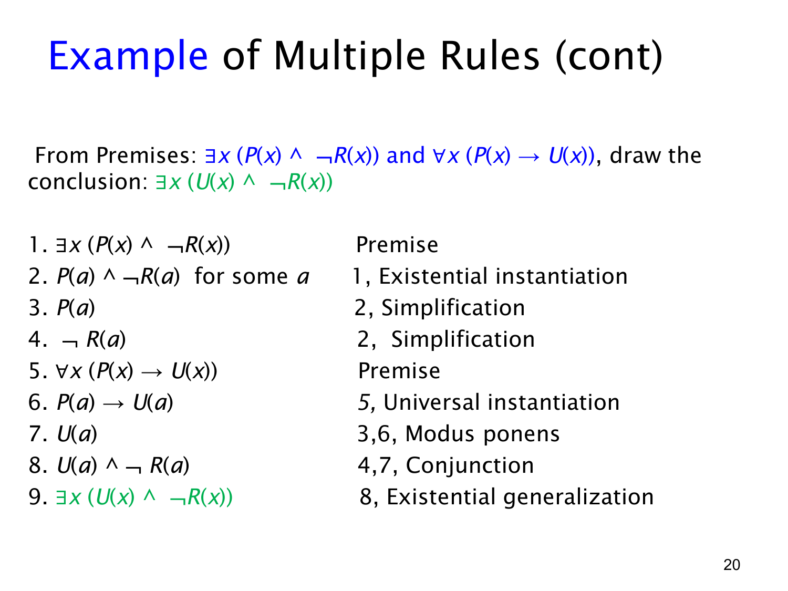

L1.3 · 第 20 页讲解原文
查看这一页课件

多条推理规则的完整证明
这一页把上一页的思路写成九步形式证明。前提是
∃x(P(x)∧¬R(x)),∀x(P(x)→U(x)),
目标是 ∃x(U(x)∧¬R(x))。这里 P(x) 表示“x 是这门课的学生”，R(x) 表示“x 读过教科书”，U(x) 表示“x 通过了课程”。
证明可以分成三段来看：
- 取得见证并拆开性质。第 1 行写出存在前提。第 2 行用存在实例化（existential instantiation）取一个满足条件的见证 a，得到 P(a)∧¬R(a)。第 3、4 行分别用化简规则（simplification）取得 P(a) 和 ¬R(a)。a 是从前提引入的新见证；不能预先指定它是某个特定的人。
- 将全称前提应用于同一人。第 5 行写出 ∀x(P(x)→U(x))。第 6 行用全称实例化（universal instantiation），以刚才的 a 代入，得到 P(a)→U(a)。第 7 行把第 3 行的 P(a) 与第 6 行合用，通过肯定前件（modus ponens）得出 U(a)。
- 合成并推广结论。第 8 行把第 7 行的 U(a) 和第 4 行的 ¬R(a) 用合取引入（conjunction）合成 U(a)∧¬R(a)。第 9 行用存在概括（existential generalization）：既然这个 a 满足合取式，就存在一个满足它的人，即 ∃x(U(x)∧¬R(x))。
整条证据链始终围绕同一个 a。存在前提提供了“学生且没读书”的人；全称前提保证这位学生也通过课程；最后才可以作存在概括。表中右栏逐行注明了所用前提或推理规则，检查证明时应同时核对公式和它所引用的行号。